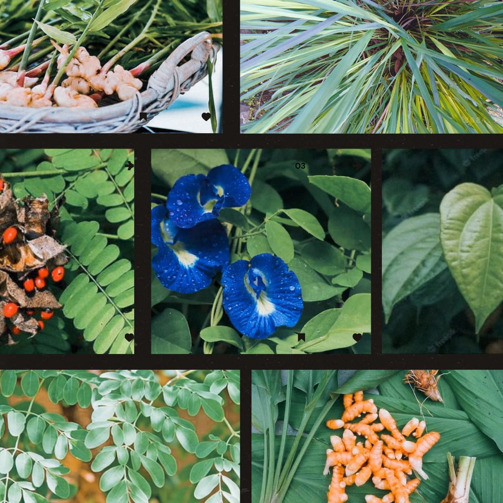
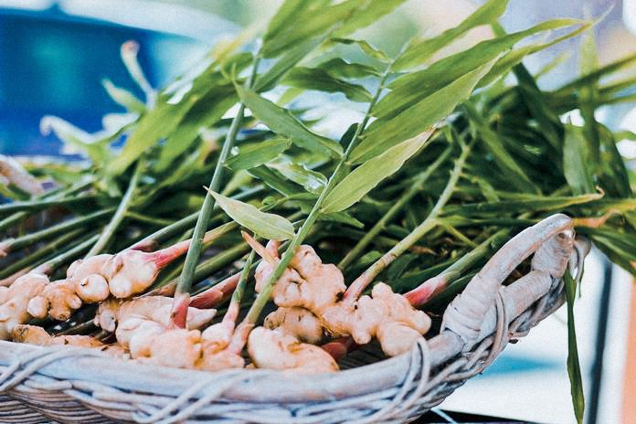
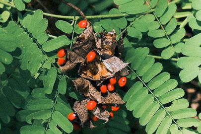
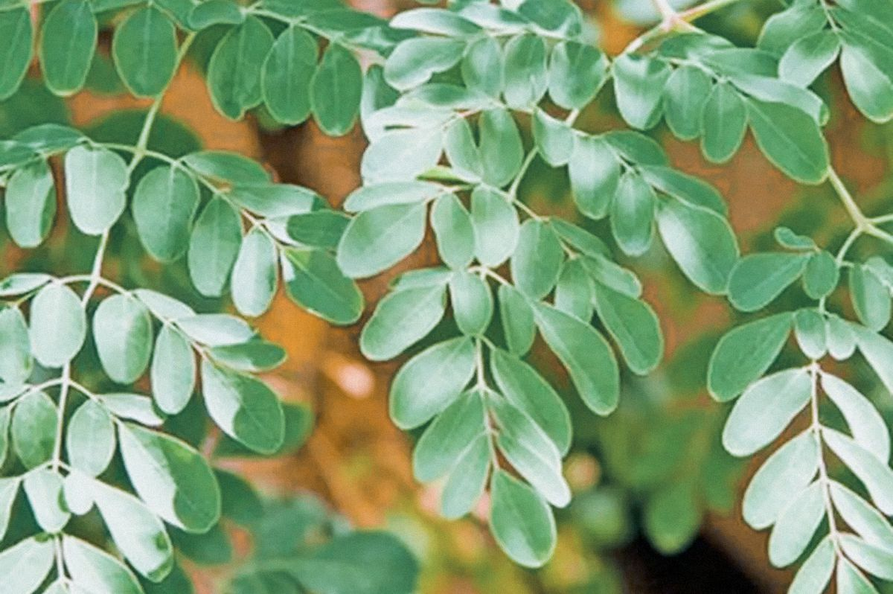
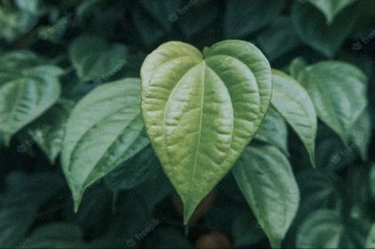
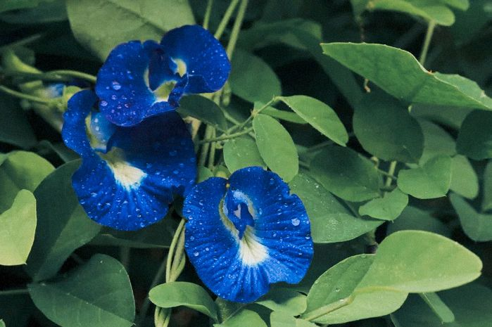
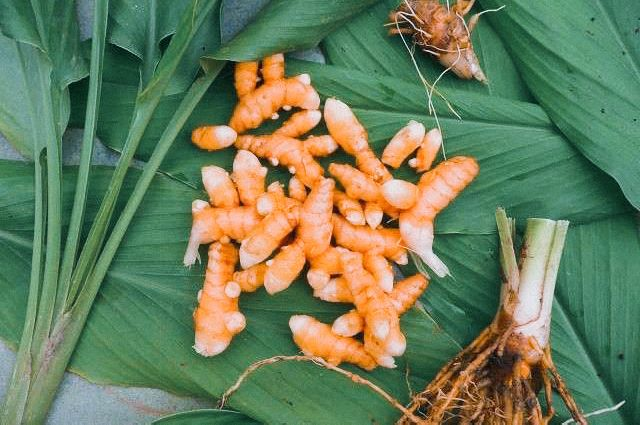
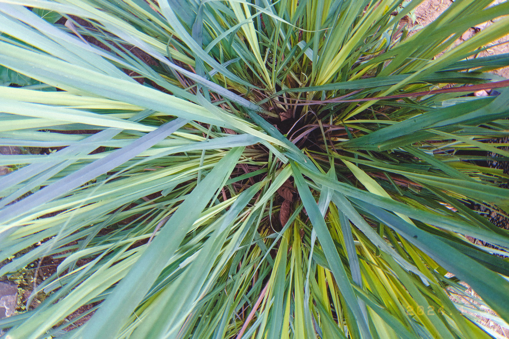

Resize the browser windows to see the effect.
By Dizamira, May, 03 2024
By Dizamira, April, 30 2024
Dengan menanam jahe, kamu ikut berkontribusi dalam menjaga kelestarian lingkungan dan membuat tanah menjadi lebih subur. Sekarang kamu tahu betapa menguntungkannya budidaya jahe. Mulai bisnis ini dan dapatkan penghasilan yang stabil.
Jahe sering kali dikonsumsi dalam bentuk minuman yang menghangatkan tubuh, namun tanaman ini juga bisa ditambahkan ke dalam makanan atau dipadukan dengan tanaman obat lainnya sehingga menghasilkan menu minuman baru. Ada beberapa jenis jahe, yang semuanya tentu memiliki sejumlah manfaat kesehatan.
Yang asyiknya lagi, bunga mawar ini ngga ribet buat dirawat. Jadi, buat yang pengen taman minimalis tapi tetep kece, tanaman bunga cantik untuk taman minimalis satu ini bisa jadi solusinya. Yuk coba bawa nuansa romantis ke taman rumah dengan bunga mawar yang memukau.
By Dizamira, Maret, 01 2024
Tanaman saga (Abrus precatorius) adalah tumbuhan merambat yang tumbuh liar di hutan, ladang, atau halaman pada ketinggian 300-1000 meter dari permukaan laut. Seluruh bagian tanaman ini bisa dimanfaatkan sebagai obat tradisional, terutama daunnya.
Ada berbagai manfaat daun saga yang dipercaya sebagai obat tradisional sejak zaman dulu. Masyarakat umum meyakini manfaat daun saga sebagai obat batuk, pilek, demam, sakit perut, dan berbagai penyakit lainnya
By Dizamira, May, 14 2024
Mengkonsumsi daun kelor secara rutin dapat memperkuat sistem kekebalan tubuh dan mencegah berbagai penyakit. Manfaat lain dari budidaya kelor adalah sebagai sumber bahan baku industri. Biji kelor mengandung minyak yang dapat diekstraksi dan dimanfaatkan dalam produksi kosmetik, sabun, dan lilin.
By Dizamira, February, 30 2024
Manfaat daun sirih banyak digunakan untuk obat herbal. Tanaman sirih sendiri banyak tumbuh di Indonesia. Memiliki manfaat beragam, daun ini mengandung protein, iodin, sodium, vitamin A, vitamin B1, vitamin B2, asam nikotinat, flavonoid, fenol, tanin, saponin, polifenolat, dan minyak atsiri. Ada dua jenis daun sirih yang biasa dijumpai yakni daun sirih hijau dan sirih merah. Keduanya sama-sama memiliki segudang manfaat untuk kesehatan.
By Dizamira, Oktober, 30 2024
Sebuah penelitian yang menilai efektivitas larutan bubuk bunga telang, peneliti telah menemukan bahwa manfaat bunga telang secara signifikan dapat mengurangi suhu tubuh ketika seseorang menderita demam yang disebabkan peradangan. Ini berkat kandungan flavonoid, antioksidan kuat yang bermanfaat sebagai antiinflamasi dan sistem kekebalan tubuh.
By Dizamira, january, 21 2024
Manfaat yang akan kamu dapatakn jika menanam kunyit, yaitu sebagai bahan obat tradisional, bahan baku industri jamu dan kosmetik, bahan bumbu masak, peternakan, dan lain-lain. Di samping itu rimpang tanaman kunyit juga bermanfaat sebagai anti inflamasi, anti oksidan, anti mikroba, pencegah kanker, dan anti tumor
By Dizamira, Desember, 16 2024
Sereh menjadi salah satu tanaman rempah yang mengandung nutrisi baik untuk kesehatan tubuh. Tanaman ini mengandung karbohidrat, serat, hingga protein. Selain itu, lemongrass juga mengandung berbagai vitamin yang mampu mengoptimalkan sistem imun tubuh, seperti vitamin A, C, dan B. Lemongrass juga mengandung mineral
@dza_asmra